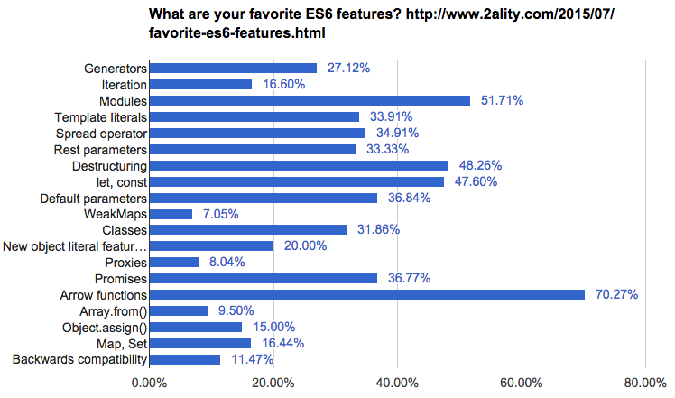

Created by petriken and contributors
function name(parameter1, parameter2, parameter3) {
code to be executed
}
anonymous function
let anonymous = function() {
code to be executed
}
named function
let named = function name() {
code to be executed
}
function timesTwo(parameters) {
return param * 2
}
timesTwo(3); // 6
let timesTwo = parameters => param * 2
timesTwo(3); // 6
Arrow functions does not have its own
this, arguments, or
super Arrow function are best
suited for
non-method functions, and they
cannot be used as constructors.
Surveys show they’re the most popular ES6 feature:
 by Dr. Axel Rauschmayer from 2ality.comThis is the syntax that defines an IIFE:
(function() {
code to be executed
})()
What is
this
?
// In web browsers, the window object is also
// the global object:
console.log(this === window); // true
a = 37;
console.log(window.a); // 37
this.b = "MDN";
console.log(window.b) // "MDN"
console.log(b) // "MDN"
Inside a function, the value of this depends on how the function is called.
function f1() {
return this;
}
// In a browser:
f1() === window; // true
// In Node:
f1() === global; // true
call(), apply():
// An object can be passed as the first argument
// to call or apply and this will be bound to it.
const obj = {a: 'Custom'};
// This property is set on the global object
const a = 'Global';
function whatsThis() {
return this.a; // The value of this is dependent
// on how the function is called
}
whatsThis(); // 'Global'
whatsThis.call(obj); // 'Custom'
whatsThis.apply(obj); // 'Custom'
let globalObject = this;
let foo = (() => this);
console.log(foo() === globalObject); // true
function makeFunc() {
let name = 'Godzilla';
function displayName() {
alert(name);
}
return displayName;
}
let myFunc = makeFunc();
myFunc();
function compose(f1, f2) {
return function(value) {
return f1(f2(value));
};
}
() => () => result;
const Kitten = function() {
this.name = 'Garfield';
this.color = 'brown';
this.gender = 'male';
};
Kitten.prototype.setName = function(name) {
this.name = name;
return this;
};
Kitten.prototype.setColor = function(color) {
this.color = color;
return this;
};
Kitten.prototype.setGender = function(gender) {
this.gender = gender;
return this;
};
Kitten.prototype.save = function() {
console.log(
'saving ' + this.name + ', the ' +
this.color + ' ' + this.gender + ' kitten...'
);
return this;
};
Here is example with method chaining on our new class:
new Kitten()
.setName('Bob')
.setColor('black')
.setGender('male')
.save();
// > saving Bob, the black male kitten...
Here is example without method chaining on our new class:
const bob = new Kitten();
bob.setName('Bob');
bob.setColor('black');
bob.setGender('male');
bob.save();
// > saving Bob, the black male kitten...